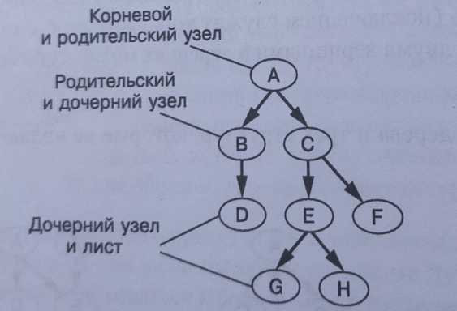

Алгоритм поиска с возвратом и обхода дерева. Глубина дерева.
Условие:
Нужно создать структуру данных к дереву.
Дерево:

И написать программу для определения максимальной глубины дерева.
Код:
"""РЕКУРСИВНАЯ ФУНКЦИЯ для ДЕРЕВА для определения его максимальной глубины."""
def main(node):
max_depth = 0
if len(node["children"]) > 0: # это рекурсивный случай, в узле котором есть дочерние элементы
for child in node["children"]:
depth = main(child)
if depth > max_depth:
max_depth = depth
return max_depth + 1 # при разборке стека, каждый уровень глубины увеличивается на 1. На вершине стека, когда все ветви дерева соберутся обратно в главный узел, будет определена максимальная глубина дерева.
else: # Базовый случай - конец ветки или стек доехал до листа. Начинается подсчёт глубины дерева с базового случая, который будет 0
return 0
"""ПРИМЕР ПОДРОБНОЙ ЗАПИСИ ДЕРЕВА."""
# здесь описаны все узлы
root = { "data": "A", "children": [] }
node2 = { "data": "B", "children": [] }
node3 = { "data": "C", "children": [] }
node4 = { "data": "D", "children": [] }
node5 = { "data": "E", "children": [] }
node6 = { "data": "F", "children": [] }
node7 = { "data": "G", "children": [] }
node8 = { "data": "H", "children": [] }
# здесь описаны, только те узлы, у которых есть дети. По-другому, те узлы, которые не будут являться базовыми случаями (листьями дерева).
root["children"] = [node2, node3]
node2["children"] = [node4]
node3["children"] = [node5, node6]
node5["children"] = [node7, node8]
# print(root) --> {'data': 'A', 'children': [{'data': 'B', 'children': [{'data': 'D', 'children': []}]}, {'data': 'C', 'children': [{'data': 'E', 'children': [{'data': 'G', 'children': []}, {'data': 'H', 'children': []}]}, {'data': 'F', 'children': []}]}]}
print()
print(f"Максимальная глубина дерева равна {main(root)} узла.\n")